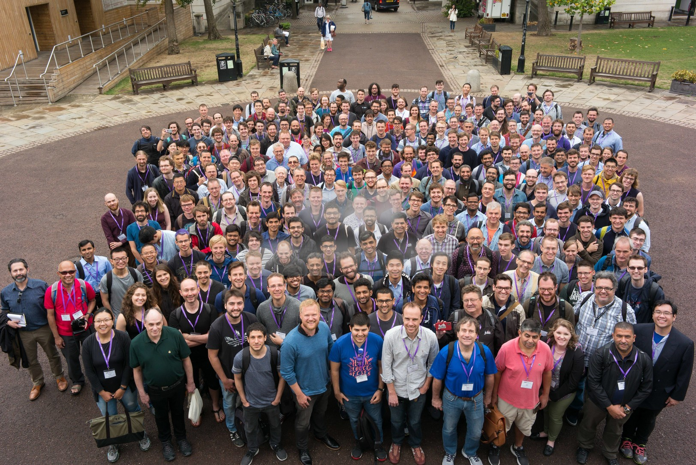

JuliaCon 2018年的展望

一切都很顺利！
作为Julia 1.0发布的场地和Julia社区最大的会议，JuliaCon 2018在多个方面都非常出色。它聚集了近350名参会者，他们代表来自非洲，亚洲，欧洲，北美，澳大利亚和南美洲的Julia语言的用户和开发者。
考虑到质量而非数量，我们很高兴地报告我们的参会者对会议非常满意：在对我们的会后反馈调查作出回应的参会者中，98.8％的人表示他们对他们决定来到JuliaCon。在1到5的等级中，88.3％的回复参加者将他们的欢迎感排在第一位，并将其列为JuliaCon的4或5（其中5是最佳分数）; 在同样的规模上，0％的参会者回答1。
此外，我们能够提供超过 70,000 美元的资金来支持会议开支，包括演讲者，使用Julia参加Google Summer of Code（GSoC）的学生，以及我们认为会给JuliaCon带来更大多样性的用户，以便从各六大洲远道而来的人们能够顺利参加我们的会议。
特别是，JuliaCon组委会能够从斯隆基金会，摩尔基金会和Julia Computing公司获得45,000美元的总额，以支持JuliaCon 2018多元化工作。凭借这些资金，相当于JuliaCon 2017多样性预算的3倍，我们能够支持超过25人的会议费用，这些人帮助增加了JuliaCon 2018的多样性。
JuliaCon 2018与参会者的一些数据
今年，在JuliaCon 2018年，15％在注册时提供有关性别信息的与参会者自称为性别少数群体。我们提供此信息是可选的，这使我们的数据不完全完整。尽管如此，我们的数据允许我们在JuliaCon 2018的参与者中对性别少数群体的百分比设置8％的下限。同样，9％在注册时提供人口统计信息的参与者自我识别为种族或少数民族，以及我们的数据 表明至少有5％的JuliaCon 2018参会者自我认定为种族或少数民族。 总体而言，由于性别，种族，民族，社会经济地位，残疾状况，性取向，年龄或教育背景等因素，在注册时提供人口统计信息的参与者中约有28％自我认定为在计算环境中代表性不足。没有所有参会者的数据，我们可以说至少有15％的参会者符合此描述。
那么，这意味着什么？
在JuliaCon的多年参与者中，似乎已经达成共识，JuliaCon 2018明显比以前的JuliaCon更加多样化。因为这是我们收集JuliaCon参会者人口统计数据的第一年，因此对会议的多样性如何随着时间的推移而发展的确切主张是棘手的。但是，我们可以这样说：对性别多样性的最佳估计表明，2017年JuliaCon的性别少数群体比例约为5％。仅使用2018年性别多样性的下限，性别多样性增加了50％以上。如果我们假设性别不影响自我报告，性别多样性可能会增加3倍。
因此，根据我们所拥有的数据，我们的参与者的印象是，JuliaCon 2018比以前的JuliaCons更加多样化。这非常令人满意。这是朝着正确方向迈出的一步，它反映了我们社区在使自己更加多样化和包容性方面的投资。与此同时，这些数字也证明我们还有很长的路要走。
我们可以做些什么来改进？
在JuliaCon 2018年之后的星期二，组委会进行了一次异常漫长的会议，我们在会上讨论了JuliaCon 2018的印象。正如我们的与会者给出的反馈意见所反映的那样，委员会成员最重要的是表达了JuliaCon的正确程度。 我们还能够确定多种方式和领域，以提高JuliaCon 2019的包容性：
最明显的是，我们不仅需要改善参加JuliaCon的人的多样性，还需要改善那些代表Julia社区的人作为JuliaCon主题演讲，发言人和会议主席。主题演讲和会议主席的选择尤其受到JuliaCon组委会招募工作的影响。因此，我们有更多的控制和更清晰的途径以这些特定的方式改善会议的多样性。
其次，我们需要训练（或以某种方式，更好地准备）我们的羽毛之鸟（BoF）会议的主持人。我们在一些BoF会议中发现了不幸的动态，在这些会议中，个人被反复说出而没有被听到，包括令人惊讶的是，在致力于多样性和包容性的BoF期间。这些动态可以通过预见和准备来预防：特别是在多元文化和种族/民族/性别不平衡的环境中，任何讨论中的参与条件都需要明确预先设定。 例如，当讨论组的一个子集遵循手动提升策略而另一个子组则不遵循时，讨论参与很快就会出现偏差。 我们需要准备BoF主持人来处理这种动态，以便能够听到每个想说话的人。
第三，我们打算提供所有JuliaCon 2019谈话的实况转录。实时转录不仅有益于我们的Julia社区的聋人和听力障碍成员，也有利于我们社区的非英语母语人士。
除了JuliaCon组委会成员提出的上述想法之外，我们还收到了与会者对进一步改进方法的极好反馈。 其中最重要的可能是提供更多针对两个群体的指导/培训和社区建设的途径。 首先，我们收到了为CS中的女性和其他少数群体提供专门会议（研讨会，晚宴或其他）的请求，以提供指导和建立社区。 其次，我们收到了更积极地为Julia社区的非开发/新成员设计会议的请求。 想法包括介绍GitHub /软件包开发以及晚餐注册，以便与社区的新成员和扩展其网络的小组相匹配。
结论
对于我们大多数人（包括我自己！），JuliaCon 2018是一个爆炸。 JuliaCon为我们的社区提供了一个机会，可以了解Julia生态系统中提供的工具以及这些工具启用的应用程序的出色进展。 除此之外，JuliaCon提供了一个场所，允许新成员与社区的其他成员和退伍军人一起在上一年通过冗余，话语，github和电子邮件进行沟通之后，与他人共度美好时光。 今年，我们不仅看到了社区增长，而且看到了多样性的增加，对继续推动包容性的需求的认识，以及我们如何实现更大包容性的想法/途径。
对于那些有兴趣为JuliaCon 2019做贡献的人，我们欢迎您加入JuliaCon 2019组委会。 组织工作将在2019年秋季中期全面展开，我们将寻找志愿者，负责指导，提案审查和会议主持，因为会议计划将在明年进行。